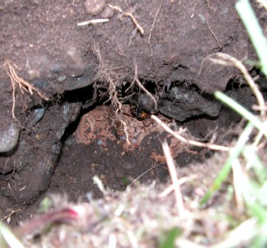
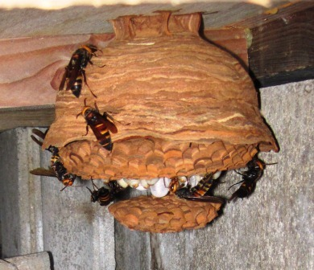
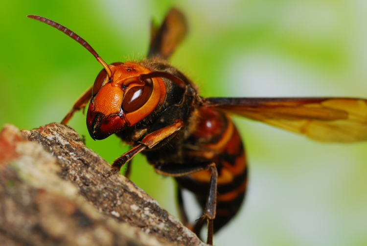
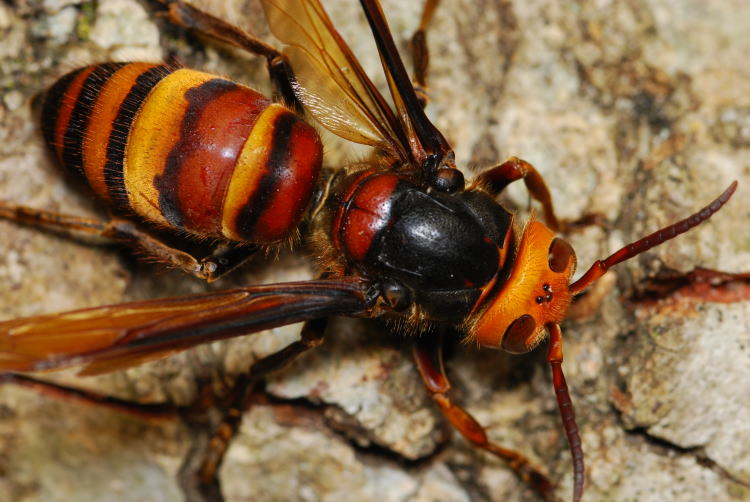

ヒメスズメバチ
（Vespa ducalis Buyssoni）
・オオスズメバチの次に大きなスズメバチですが、一番おとなしいスズメバチ。
・巣の場所は木の中、屋根裏、壁の中など閉鎖空間に作られる。
・頭部のあごの色が茶色で、腹部がカラフルできれいなスズメバチ。
ヒメスズメバチは、オオスズメバチの次に大きなスズメバチで、24ｍｍから37ｍｍにもなります。腹部の部分が黒く、比較的簡単にその他のスズメバチと区別する事が出来るはずです。
ヒメスズメバチはとてもおとなしく、巣の規模も小さいです。また木の空洞、屋根裏などの閉鎖空間に巣を作るという性質があります。
ヒメスズメバチはアシナガバチのみ捕獲し、これを幼虫の餌とします。そのため、アシナガバチの生活史に密着・依存した状態で生活しており、その他のスズメバチに比べ、生活史が短い傾向にあります。
餌をアシナガバチの幼虫やサナギに依存している為このような短い生活史となったのでしょう。
基本的には閉鎖空間に巣を作るため、屋根裏などに巣があっても気が付かない場合もあり、おとなしいスズメバチとはいえ注意が必要です。
ヒメスズメバチは、スズメバチの中で一番営巣期間が短く、基本的には８月には子育てを終えてしまいます。
女王蜂は5月から6月ころ越冬から目覚め、7月には働き蜂が、8月には新女王蜂と雄蜂が出てきます。そして9月には、営巣を終えます。

土の中から見つかったヒメスズメバチの巣
床下のヒメスズメバチのヒメスズメバチ
ヒメスズメバチは、その大きさからはちょっと考えにくいような小さな巣しか作りません。その他のスズメバチは、いかに大きく巣を作り自分達の力をアピールしているかのように営巣を行いますが、ヒメスズメバチはちょっとこの道からは外れてしまったようです。
ヒメスズメバチは餌として狩るのはアシナガバチだけです。
アシナガバチ各種の巣を襲い、幼虫またはサナギを巣穴から引っ張り出しては体液のみを吸い、自分の巣へ持ち帰ります。
アシナガバチの成虫は狩らないだけでなく、他の昆虫も襲いません。アシナガバチにとっては恐ろしい天敵かもしれませんが、なんとも風変わりな食性を持つスズメバチです。
コレとは別に、他のスズメバチと同様に樹木の樹液は好きなようで、甘い物はベツ腹のようですね（私と同じ？？）。
ヒメスズメバチは体が大きい割には大変おとなしく、巣に近づいたぐらいでは攻撃はしてきません。温厚なスズメバチです。
ですが、ヒメスズメバチだってスズメバチ。
もちろん下手に巣に刺激してしまえば刺されます☆
巣を刺激してしまうと、威嚇行動をとります。人の回りを「カチカチ」という警戒音を出しながら、飛び回りますので、どうぞ注意してください。
大きさが、オオスズメバチの次に大きいので、威嚇し飛び回られるとかなり迫力あります。
スズメバチ属(vespa)

越冬から目覚め活動を始めたヒメスズメバチの女王蜂（調布市・千葉昌生撮影）
ヒメスズメバチの女王蜂 腹部の模様が奇麗ですね★（（調布市・千葉昌生撮影））-
生け捕り捕獲など

-
種類や生活史・巣の場所等

-
被害者や対策・対応等

-
すずめばちやについて